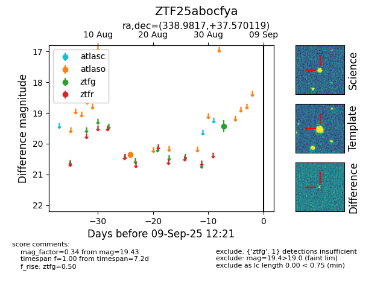

FINK: ZTF25abocfya
Lasair: ZTF25abocfya
ALeRCE: ZTF25abocfya
ZTF25abocfya (ztf,fink)
equatorial (ra, dec) = (338.9817,+37.57012)
galactic (l, b) = (95.2648,-17.91617)

last atlaso=20.35, ztfg=19.43
1 atlaso, 1 ztfg detections